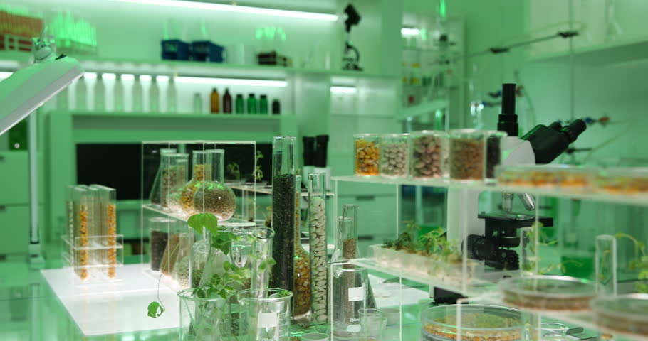
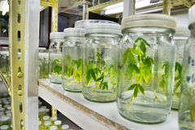
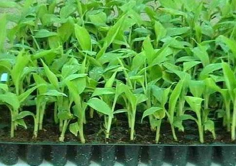
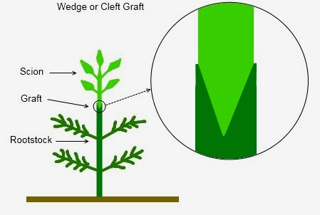
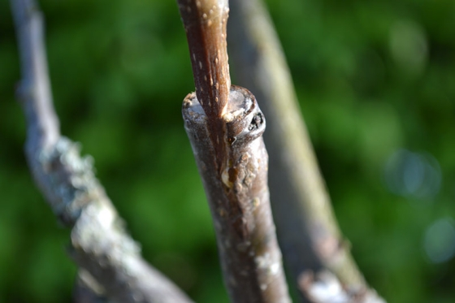
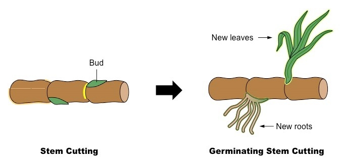
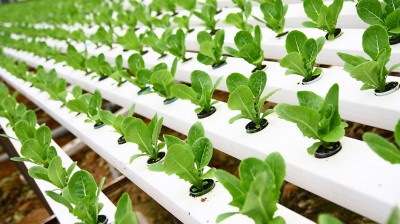

The success of a tissue culture laboratory is affected by the design of the facility and its furnishings. Specific elements of both the facility and its furnishings are selected to promote sterility, ease of operation, plant growth and work comfort. The intended use of the laboratory is a major factor influencing its design.
Tissue culture laboratories are used for teaching, research or commercial production and possibly for hobby. Each category of user has different perspectives, different goals that would affect design.
A commercial laboratory should be efficiency-oriented because of profit motives. The same principles could be applied to research and teaching laboratories at the appropriate level of sophistication
Some of these things to consider are:-
Location: Consider land cost and availability of electricity, water and sewer. Where water and sewer are not available,wells must be drilled and soil percolation tests done to determine suitability for septic tank drainage fields, with special emphasis on managing a large amount of waste water, also consider proper zoning where it applies, proximity to an adequate work force and transportation for the personnel, and a responsible shipping service. Another consideration is whether there is a heavy particle load in the air from industry, saw mill, unpaved roads, etc., because of the need for stringent air filtration to safeguard cleanliness.

Structure: In the early stages of planning a construction engineer and an experienced tissue culture consultant should coordinate construction details with special design needs relative to tissue culture. Points of significance would include an air tight structure with insulation against heat and cold plus adequate air conditioning to handle the heavy heat load from the media preparation, transfer and growth room areas.
Good air filtration is necessary throughout the entire laboratory to aid cleanliness, and efficient air flow would be especially necessary where chlorine solutions and alcohol are used. Some heating and cooling would also be required in the shipping area to promote personnel comfort and plant survival during plantlet handling. Careful ducting and air directing would help maintain even temperatures throughout the growth rooms. Wall and floor surfaces should be chosen for ease in keeping clean as well as for durability and economy. Sliding, see-through doors save space and promote safety. Automated doors would further assist in moving loaded carts.
All laboratory functions and related storage must be on the same floor since there is both a safety hazard and an efficiency factor in carrying cultures and supplies up and down stairs.
Floor plan: The designation of work areas and the layout within each one should promote cleanliness and efficient work-flow to prevent back-tracking within and between areas. Figure 1 illustrates one possible floor plan allowing for a "clean zone". Positive air pressure in this "clean" zone, and a tacky floor mat at the entrance to it, helps keep out dust.
Preparation of plant tissue for tissue culture is performed under aseptic conditions under filtered air. Thereafter, the tissue is grown in sterile containers, such as petri dishes or flasks in a growth room with controlled temperature and light intensity. Living plant materials from the environment are naturally contaminated with microorganisms, their surfaces need to be sterilized in chemical solutions either alcohol or sodium/calcium hypochlorite before suitable samples (explants) are taken. The sterile explants are then usually placed on the surface of a sterile solid culture medium. Solid and liquid media are generally composed of inorganic salts plus a few organic nutrients, vitamins and plant hormones. Solid media are prepared from liquid media with the addition of a gelling agent.
The composition of the medium, particularly the plant hormones and the nitrogen source have profound effects on the morphology of the tissues that grow from the initial explant: an excess of auxin will often result in a proliferation of roots, while an excess of cytokinin may yield shoots. A balance of both auxin and cytokinin will often produce an unorganised growth of cells, or callus, but the morphology of the outgrowth will depend on the plant species as well as the medium composition. As cultures grow, pieces are typically sliced off and subcultured onto new media to allow for growth or to alter the morphology of the culture. The skill and experience of the tissue culturist are important in judging which pieces to culture and which to discard. As shoots emerge from a culture, they may be sliced off and rooted with auxin to produce plantlets which, when mature, can be transferred to potting soil for further growth in the greenhouse as normal plants.

The tissue obtained from a plant to be cultured is called an explant. Explants can be taken from many different parts of a plant, including portions of shoots, leaves, stems, flowers, roots, single undifferentiated cells and from many types of mature cells provided are they still contain living cytoplasm and nuclei and are able de-differentiate and resume cell division. However this is not true for all cells or for all plants

This is a horticultural technique whereby tissues of plants are joined so as to continue their growth together.
 
Stem cutting refers to a process used during vegetative propagation whereby a piece of the plant’s stem is rooted into a growth medium such as moist soil. Consequently, the stem cutting will thrive and grow as a new plant.

Aeroponics is an indoor gardening practice in which plants are grown and nourished by suspending their root structures in air and regularly spraying them with a nutrient and water solution. See diadram below.
Hydroponics plants are grown without any soil and are constantly fed a nutrient solution that is pumped from a tank (reservoir) and is most often continually recycled throughout the system.

Plants grown in a hydroponic garden are usually grown in trays that are slightly angled in order to allow the nutrient solution to flow back to the holding tank through gravity. The plants, which are grown without soil, are anchored in the trays with an inert material such as clay, sand, rockwool, or coco coir.
Depending on the aeroponic system, nutrients may be sprayed manually at intervals throughout the day and night, but most aeroponic systems have one or more pumps that automatically keep plants nourished without constant supervision. As long as the system is sealed and nutrient mist is consistently pumped to the roots, plants should thrive in an aeroponic environment.